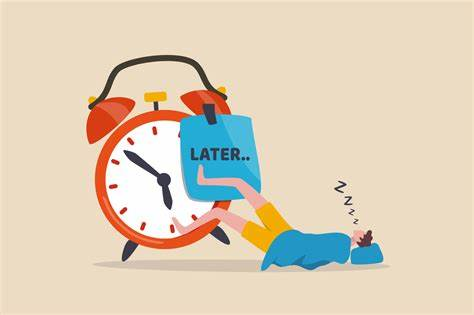
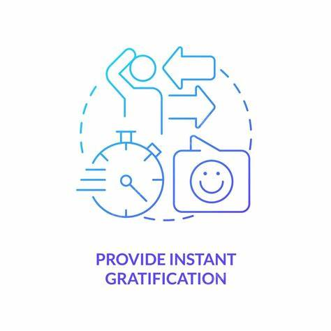

Hábitos Saludables
Los hábitos son comportamientos repetidos regularmente, muchas veces de manera automática, que se convierten en una parte central de nuestra vida cotidiana. Estos comportamientos son el resultado de la repetición constante y pueden influir significativamente en nuestra salud, productividad y bienestar general. Los hábitos nos permiten simplificar las decisiones diarias, ahorrar tiempo y energía, ya menudo se convierten en la base sobre la cual construimos nuestras metas y aspiraciones. Mientras que los hábitos positivos, como hacer ejercicio regularmente o leer cada día, pueden mejorar nuestra calidad de vida, los hábitos negativos, como el sedentarismo o la mala alimentación, pueden tener efectos perjudiciales. Entender cómo funcionan y cómo se forman los hábitos nos permite tomar el control de ellos, orientándolos hacia el logro de nuestros objetivos personales y el fortalecimiento de nuestra salud.
ㅤ
Cómo Formar y Mantener Hábitos: Estrategias Efectivas
Para adoptar un nuevo hábito, es útil empezar con pequeños pasos . Comenzar de manera gradual hace que el proceso sea menos intimidante. Por ejemplo, si quieres empezar a correr, podrías comenzar a caminar 5 minutos y luego aumentarlo gradualmente. Establecer recordatorios es otra estrategia útil, ya que estos pueden ser alarmas, notas adhesivas, o aplicaciones móviles que te ayudarán a recordar realizar el hábito. Además, asociar el hábito a una rutina existente ayuda a integrarlo fácilmente en tu día. Por ejemplo, si deseas beber más agua, puedes hacerlo cada vez que te sientas a comer. La consistencia es clave, por lo que realizar el hábito a la misma hora y en el mismo lugar todos los días puede acelerar el proceso de automatización. También es importante contar con recompensas motivadoras ; Celebra cada pequeño logro, como un día extra de lectura o una semana sin olvidar la botella de agua, te ayuda a mantener la motivación.
ㅤ
Para la sección de hábitos nos enfocamos en promover hábitos saludables mediante consejos prácticos, además de visibilizar los malos hábitos y cómo evitar que estos se produzcan. Aqui puedes ver algunos tipos de habitos que puedes adoptar:
ㅤ
1. Hábitos Alimenticios Saludables
Comer de manera saludable no significa hacer dietas estrictas, sino adoptar prácticas que ayuden a tu cuerpo a funcionar mejor.
Concejos:
Come muchas frutas y verduras al día: Esto proporciona vitaminas, minerales y fibra esenciales.
Evita los alimentos ultraprocesados: Opta por comidas caseras utilizando ingredientes locales como la papa, la yuca y el plátano.
No te saltes el desayuno: Un buen desayuno te da la energía para empezar el día con fuerza.
ㅤ
2. Hábitos de Actividad Física
Mantenerse físicamente activo no solo te ayuda a mantener un peso saludable, sino que también mejora tu estado de ánimo y rendimiento académico.
Concejos:
Haz al menos 30 minutos de ejercicio al día: Puede ser caminar, montar en bicicleta, jugar fútbol o bailar.
Participa en deportes de equipo: Jugar fútbol, baloncesto o voleibol es una excelente forma de hacer ejercicio y mejorar tus habilidades sociales.
Aprovecha los espacios naturales: En Buenavista, puedes caminar o correr en los parques y espacios naturales que tiene nuestro municipio.
ㅤ
3. Habitos de sueño
Dormir bien es esencial para el crecimiento y el rendimiento. Un mal descanso puede afectar a tu estado de ánimo y capacidad de concentración.
Concejos:
Duerme entre 7 y 8 horas por noche: Esto ayuda a tu cuerpo a recuperarse y tener energía al día siguiente.
Establece una rutina de sueño: Acuéstate y despiértate a la misma hora todos los días, incluso los fines de semana.
Desconéctate de las pantallas antes de dormir: Evita el uso de celulares o computadoras una hora antes de acostarte.
ㅤ
4. Hábitos de Higiene Personal
Una buena higiene no solo protege tu salud, sino que también te ayuda a sentirte mejor contigo mismo.
Concejos:
Lávate las manos con frecuencia: Especialmente antes de comer y después de usar el baño.
Cepíllate los dientes después de cada comida: Mantén tu higiene bucal para evitar problemas como las caries.
Dúchate regularmente: Mantener una buena higiene corporal es esencial, sobre todo si practicas deportes.
ㅤ
5.Hábitos de organización del tiempo
Aprender a organizar tu tiempo es clave para reducir el estrés y ser más productivo.
Concejos:
Planifica tu día: Crea una lista de tareas y asigna tiempo para cada una, incluyendo tiempo para estudiar, hacer ejercicio y descansar.
Evita la procrastinación: Trata de completar tus tareas antes de que se acumulen, lo que reducirá el estrés.
Dedica tiempo al descanso: Además de cumplir con tus responsabilidades, asegúrate de tomar pausas y descansar cuando lo necesites.
ㅤ
Malos Habitos
Los malos hábitos se desarrollan de manera similar a los buenos, a través de la repetición de comportamientos. Muchas veces, surgen como respuestas a situaciones de estrés, aburrimiento o emociones negativas. Por ejemplo, comer en exceso, procrastinar o pasar mucho tiempo frente a pantallas pueden ser formas de evitar lidiar con situaciones difíciles o de buscar gratificación inmediata.
Ejemplos de malos habitos:

Sedentarismo :Pasar mucho tiempo sentado, viendo televisión o usando dispositivos electrónicos, reduce la actividad física, lo que aumenta el riesgo de obesidad y otros problemas de salud.
Comer en exceso o mal: Consumir alimentos ultraprocesados o comer por aburrimiento o estrés puede llevar a problemas de salud, incluyendo el aumento de peso y la mala nutrición.

Procrastinación: Dejar las tareas importantes para después puede generar estrés, ansiedad y bajo rendimiento académico. Este hábito se refuerza con la gratificación inmediata de hacer cosas más entretenidas o fáciles.
ㅤ
Factores comunes que los generan :

Gratificación instantánea: Los malos hábitos suelen ofrecer una recompensa inmediata (por ejemplo, comer comida chatarra para sentir placer), lo que refuerza el comportamiento.
Entorno social y cultural: Amigos y familiares también pueden influir en la adopción de malos hábitos, como el sedentarismo, el consumo de alcohol o fumar.

Estrés y emociones negativas: Muchas personas desarrollan malos hábitos para lidiar con el estrés, la ansiedad o la tristeza. Estos hábitos pueden convertirse en mecanismos de escape.
ㅤ
Cómo evitar que se produzcan los malos hábitos
Conciencia y autoconocimiento: El primer paso para cambiar un mal hábito es reconocerlo. Mantén un registro de tus acciones diarias para identificar patrones negativos.
Crea un entorno positivo: Rodéate de personas y situaciones que promuevan buenos hábitos. Tener amigos que valoren la actividad física, por ejemplo, puede ayudarte a moverte más.
ㅤ
Estrategias para evitar recaer en malos hábitos
Establece metas claras:Define metas realistas y alcanzables. Por ejemplo, en lugar de decir “quiero estar saludable”, establece metas específicas como “caminar 30 minutos al día” o “beber 8 vasos de agua". ACTÚA.
Premia tu progreso: Refuerza el buen comportamiento con pequeñas recompensas cuando logres tus objetivos. Estas recompensas pueden ser desde un descanso para ver una serie hasta disfrutar de una comida saludable que te guste.
Busca apoyo: Tener a alguien que te acompañe o motive a alcanzar tus objetivos puede hacer la diferencia. Un amigo, familiar te puede ayudar a mantenerte en el camino correcto.
ㅤ
Recursos Adicionales para Desarrollar Hábitos Saludables
Libro recomendados:
-"Hábitos Atómicos" de James Clear : Un libro que explora cómo los pequeños cambios pueden llevar a mejoras significativas.
-"El Poder de los Hábitos" de Charles Duhigg : Explica la ciencia de los hábitos y cómo transformarlos.
ㅤ
Artículos y Estudios Científicos : Aqui hay algunos enlaces a artículos que profundizan en la psicología de los hábitos y su impacto en la salud.
-La Psicología de la Formación de Hábitos : Este artículo de la British Journal of General Practice explora cómo se forman los hábitos y las estrategias efectivas para implementarlos. Destaca la importancia de establecer un contexto específico y sencillo para que el nuevo hábito se mantenga, como realizar una acción en el mismo momento o lugar cada día.¡Si quieres visitarlos ingresa a este link! British Journal of General Practice.
-La Ciencia de los Hábitos : En Psychology Today , se explica cómo los hábitos están vinculados a estímulos y respuestas, y cómo estos se pueden modificar para mejorar el bienestar. Este recurso desmitifica la idea de que los hábitos se forman en 21 días, sugiriendo que, en realidad, este proceso puede llevarse a cabo alrededor de 66 días.¡Si quieres visitarlos ingresa a este link! Psichology Today.
-NCBI - Impacto de los Hábitos en la Salud : Este estudio revisa cómo los hábitos de vida impactan en la salud a largo plazo y ofrece recomendaciones sobre cómo mejorar estos hábitos.¡Si quieres visitarlos ingresa a este link! National Center for Biotechnology Information.
ㅤ
Podcasts y Videos :Para complementar, algunos podcasts interesantes sobre el tema que puedes recomendar son:
-"The Power of Habit" Este podcast basado en el libro de Charles Duhigg, analiza cómo los hábitos influyen en nuestras vidas y qué estrategias pueden ayudar a formar buenos hábitos. Disponible en Spotify.
-"La Psicología del Éxito" Explora el papel de los hábitos en la consecución de objetivos personales y profesionales, con consejos prácticos de expertos en psicología.
-"Habit Coach" Este podcast ofrece episodios cortos sobre cómo construir hábitos saludables de manera práctica y sencilla, incluyendo temas como la productividad, el bienestar y la motivación.
-Atomic Habits - Resumen animadoEste video presenta un resumen animado del libro "Atomic Habits" de James Clear, que explica cómo los pequeños cambios pueden llevar a la formación de hábitos poderosos y sostenibles.
-Cómo Formar Hábitos Saludables en 2023 - Bully MagnetsUn video animado que detalla estrategias específicas para adoptar hábitos saludables, destacando consejos prácticos y motivación para iniciar cambios positivos.
Matt D'Avella - Cómo Mantener los Hábitos En este video, el cineasta Matt D'Avella explora la dificultad de mantener nuevos hábitos y ofrece técnicas basadas en su experiencia personal para lograr la consistencia.
ㅤ
Para cerrar esta sección sobre hábitos, es esencial recordar que los hábitos son el resultado de pequeñas acciones repetidas con consistencia. A través de la comprensión de su formación y la aplicación de estrategias efectivas, como las recomendaciones y recursos aquí presentados, cada persona puede trabajar para construir hábitos que contribuyan a su bienestar físico, mental y emocional. Adoptar hábitos saludables no solo mejora la calidad de vida, sino que también facilita el logro de metas a largo plazo, fortaleciendo la autodisciplina y la resiliencia. Con esta guía y los recursos adicionales, estás listo para comenzar a transformar tus hábitos y potenciar tu vida.